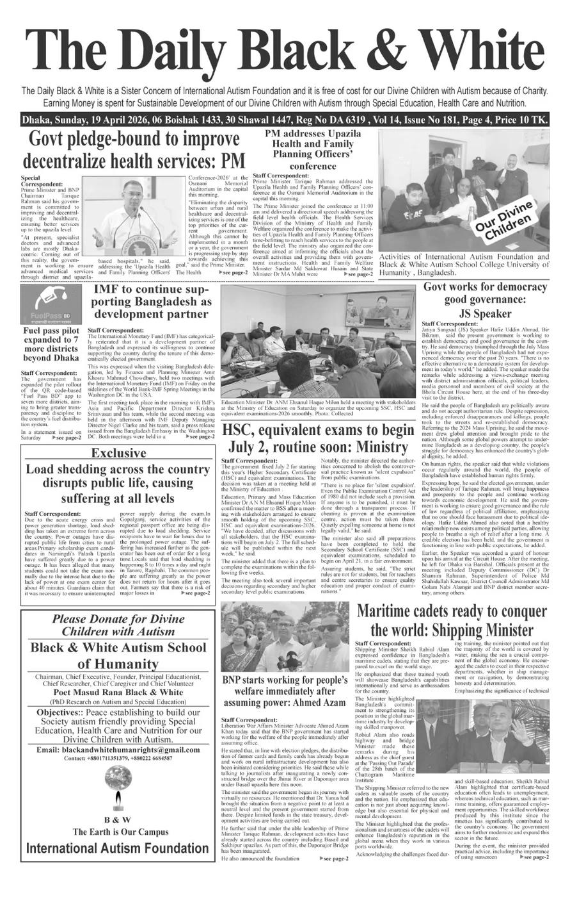
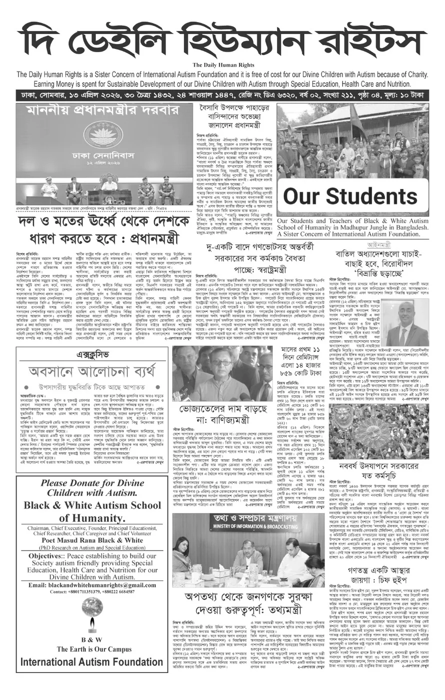
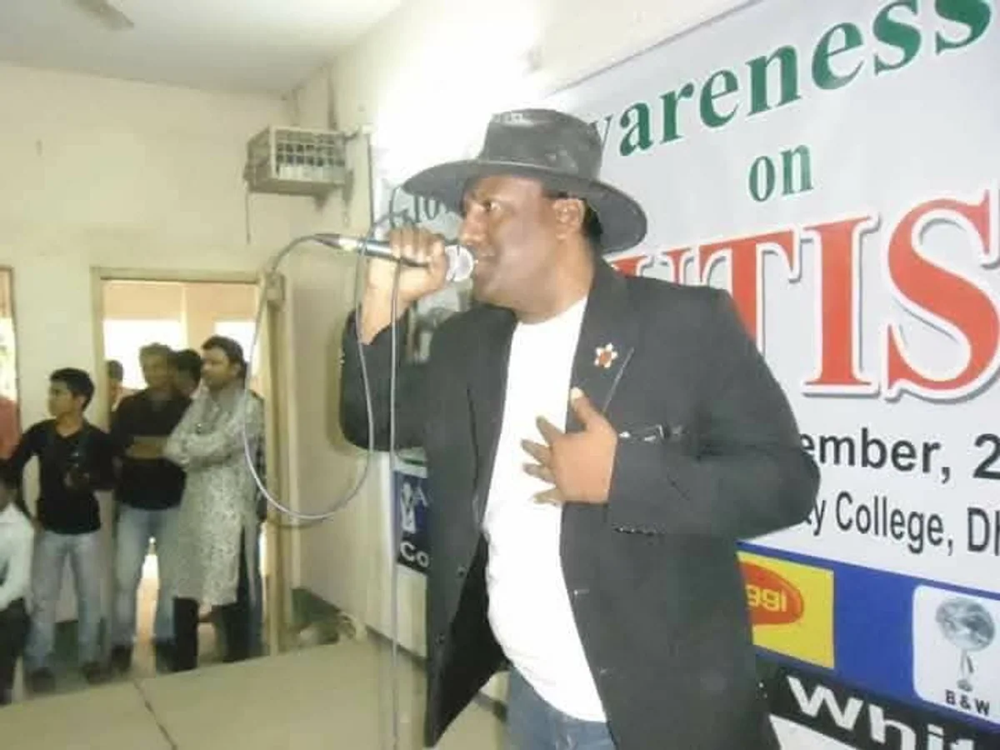

Sister concerns & publications
Voices that walk with the children.
Four companion works — two daily newspapers, a scholarly journal and a musical band — each free for our divine children, each funded by the Foundation's quiet charity.

§ I — Daily Newspaper
The Daily Black & White.
The Daily Black & White is a sister concern of the International Autism Foundation — a voice kept alive by charity, freely given to our divine children with autism. Every taka earned is returned to the sustainable development of our children through Special Education, Health Care and Nutrition.
- Type
- Daily newspaper · English & Bangla
- Readership
- Free of cost for all divine children & families
- Purpose
- Revenue directed to Special Education, Health Care & Nutrition
§ II — Human Rights Daily
The Daily Human Rights.
দি ডেইলি হিউমান রাইটস
A second daily, free for our divine children with autism and their families. Like its sister paper, every earning is spent on the sustainable development of divine children through Special Education, Health Care and Nutrition.
- Languages
- Bangla & English
- Focus
- Stories of those the world forgets
- Circulation
- Free for the Foundation's families

§ III — Scholarly Volume
The International Autism Foundation Journal.
A scholarly volume gathering what we learn from our divine children — so researchers, clinicians, teachers and families elsewhere may learn with us. Free, open-access, and built by the same hands that run the village school.
Press the button on the left to open the journal as a flipbook — you can turn each page by dragging the corner, as if the volume were in your hands.

§ IV — Music, Since 1997
Black & White English Musical Band.
Since 1997, the Black & White English Musical Band has played for our divine children with autism. Music is not a performance here — it is medicine. A rhythm a child can feel before they can speak it. A melody that walks beside them through the day.
"Music is very important for the sustainable development of our Divine Children with Autism."
Support & Subscribe
All four are kept alive by your blessings.
Every subscription, every donation, every kind word sustains the Foundation's sister concerns — and through them, the divine children who read, listen and grow with us.